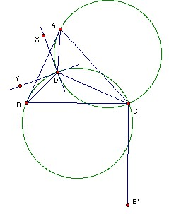

Let D be a point inside the acute-angled triangle ABC such that ∠ADB = ∠ACB + 90o, and AC·BD = AD·BC.
(a) Calculate the ratio AB·CD/(AC·BD).
(b) Prove that the tangents at C to the circumcircles of ACD and BCD are perpendicular.
Solution
By Glen Ong, Oracle Corporation

Take B' so that CB = CB', ∠BCB' = 90o and B' is on the opposite side of BC to A. It is easy to check that ADB, ACB' are similar and DAC, BAB' are similar. Hence AB/BD = AB'/B'C and CD/AC = BB'/AB'. It follows that the ratio given is BB'/B'C which is √2.
Take XD the tangent to the circumcircle of ADC at D, so that XD is in the ∠ADB. Similarly, take YD the tangent to the circumcircle BDC at D. Then ∠ADX = ∠ACD, ∠BDY = ∠BCD, so ∠ADX + ∠BDY = ∠ACB and hence ∠XDY = ∠ADB - (∠ADX + ∠BDY) = ∠ADB - ∠ACB = 90o. In other words the tangents to the circumcircles at D are perpendicular. Hence, by symmetry (reflecting in the line of centers) the tangents at C are perpendicular.
Theo Koupelis, University of Wisconsin, Marathon provided a similar solution (about 10 minutes later!) taking the point B' so that ∠BDB' = 90o, BD = B'D and ∠B'DA = ∠ACB. DAC, B'AB are similar; and ABC, AB'D are similar.
Marcin Mazur, University of Illinois at Urbana-Champaign provided the first solution I received (about 10 minutes earlier!) using the generalized Ptolemy's equality (as opposed to the easier equality), but I do not know of a slick proof of this, so I prefer the proof above.

Solutions are also available in István Reiman, International Mathematical Olympiad 1959-1999, ISBN 189-8855-48-X.
© John Scholes
jscholes@kalva.demon.co.uk
9 Sep 1999
Last corrected/updated 25 Aug 03